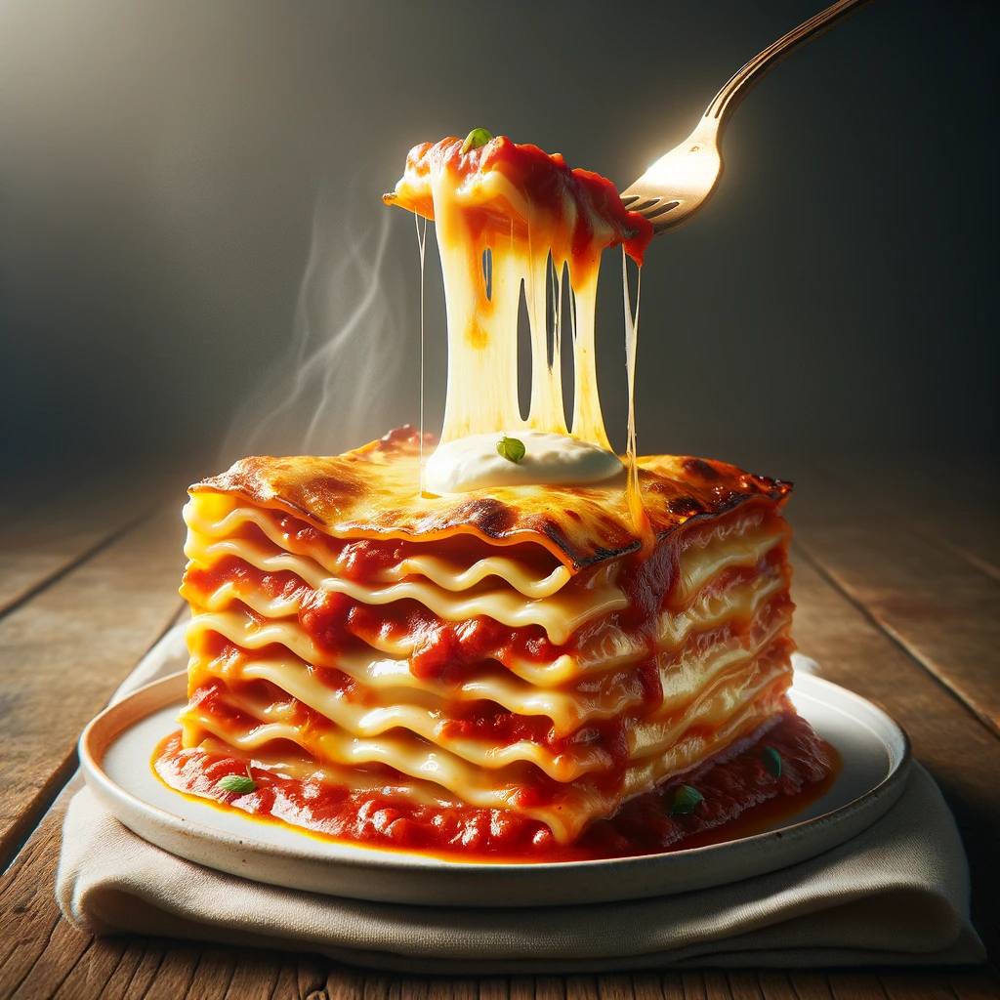

Home
Grandma's Lasgana

Description
Lasagna has always held a special place in my heart, and it's not just because of its rich layers of pasta,
cheese, and savory sauce. This classic lasagna recipe, passed down through generations in my family, embodies
the warmth and love that have woven our family together over the years.
Ingredients
For the Meat Sauce:
- 1 pound ground beef
- 1 onion, finely chopped
- 3 cloves garlic, minced
- 1 (28-ounce) can crushed tomatoes
- 2 (6-ounce) cans tomato paste
- 1 (15-ounce) can tomato sauce
- 1/2 cup water
- 2 tablespoons sugar
- 2 teaspoons dried basil
- 2 teaspoons dried oregano
- Salt and pepper to taste
For the Cheese Filling:
- 15 ounces ricotta cheese
- 1 cup grated Parmesan cheese
- 1/2 cup shredded mozzarella cheese
- 2 tablespoons fresh parsley, chopped
- 1 egg, beaten
- Salt and pepper to taste
For the Lasagna
- 12 Lasagna nooldes, cooked and drained
- 2 cups shredded mozzarella cheese
- 1/2 cup grated Parmesan cheese
Steps
- Start by making the meat sauce. In a large skillet, cook the ground beef over medium-high heat until it's
browned and crumbled. Drain any excess fat.
- Add the chopped onion and minced garlic to the skillet, sautéing until the onion becomes translucent.
- Stir in the crushed tomatoes, tomato paste, tomato sauce, water, sugar, dried basil, dried oregano, salt,
and pepper. Simmer the sauce for about 30 minutes, stirring occasionally.
- While the sauce simmers, prepare the cheese filling. In a mixing bowl, combine the ricotta cheese, grated
Parmesan cheese, shredded mozzarella cheese, chopped parsley, beaten egg, salt, and pepper. Mix well until
it's thoroughly combined.
- Preheat your oven to 375°F (190°C).
- To assemble the lasagna, spread a thin layer of meat sauce on the bottom of a 9x13-inch baking dish.
- Place a layer of cooked lasagna noodles over the sauce.
- Spread half of the cheese filling over the noodles.
- Add another layer of meat sauce on top of the cheese filling.
- Repeat the process with another layer of noodles, the remaining cheese filling, and more meat sauce.
- Finish with a final layer of noodles and top generously with shredded mozzarella and grated Parmesan cheese.
- Cover the baking dish with aluminum foil and bake for 25 minutes.
- Remove the foil and continue baking for an additional 25-30 minutes or until the lasagna is bubbling and the
cheese is golden brown.